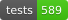

GenSBI#

{kind=link}
Work in progress!#
GenSBI is a work in progress, and we are actively developing new features and improvements. Expect the API and examples to evolve over time. We welcome contributions and feedback from the community!
Getting Started#
New to GenSBI?
Start here:
Installation - Get GenSBI installed
Quick Start Guide - 5-minute introduction
My First Model Tutorial - Complete step-by-step walkthrough
To install GenSBI with GPU support:
pip install "GenSBI[cuda12] @ git+https://github.com/aurelio-amerio/GenSBI.git"
For more installation options, see the Installation Guide.
Key Documentation Sections#
📚 Basics#
Learn the core concepts and how to use GenSBI effectively:
Conceptual Overview - Understand how GenSBI is structured
Model Cards - Choose the right model for your problem
Training Guide - Learn how to train models effectively
Inference Guide - Sample from posterior distributions
Validation Guide - Validate your results with SBC, TARP, and L-C2ST
Troubleshooting - Solve common issues
📖 Examples#
See GenSBI in action with complete working examples:
My First Model - Recommended starting tutorial
SBI Benchmarks - Two Moons, Gaussian Linear, SLCP, and more
All Examples - Full list of notebooks and scripts
All examples are available in the GenSBI-examples repository.
🔧 API Reference#
Detailed API documentation for all classes and functions:
API Documentation - Auto-generated API reference
👥 Contributing#
Want to contribute? Check out the guides:
Contributing Guide - How to contribute to GenSBI
GitHub Repository - Source code and issues
Examples#


Some key examples include:
Getting Started:
My First Model - Complete beginner tutorial
Unconditional Density Estimation:
flow_matching_2d_unconditional.ipynb
Demonstrates how to use flow matching in 2D for unconditional density estimation.diffusion_2d_unconditional.ipynb
Demonstrates how to use diffusion models in 2D for unconditional density estimation.
Conditional Density Estimation:
two_moons_flow_simformer.ipynb
Uses the Simformer model for posterior density estimation on the two-moons benchmark.two_moons_flow_flux.ipynb
Uses the Flux1 model for posterior density estimation on the two-moons benchmark.gaussian_linear_flow_flux1joint.ipynb
Uses the Flux1Joint model for posterior density estimation on the Gaussian Linear benchmark.slcp_flow_simformer.ipynb
Uses the Simformer model for posterior density estimation on the SLCP benchmark.
See the Examples page for the complete list and detailed descriptions.
AI Usage Disclosure
This project utilized large language models, specifically Google Gemini and GitHub Copilot, to assist with code suggestions, documentation drafting, and grammar corrections. All AI-generated content has been manually reviewed and verified by human authors to ensure accuracy and adherence to scientific standards.
Citing GenSBI#
If you use this library, please consider citing this work and the original methodology papers, see references.
@misc{GenSBI,
author = {Amerio, Aurelio},
title = "{GenSBI: Generative models for Simulation-Based Inference}",
year = {2025},
publisher = {GitHub},
journal = {GitHub repository},
howpublished = {\url{https://github.com/aurelio-amerio/GenSBI}}
}